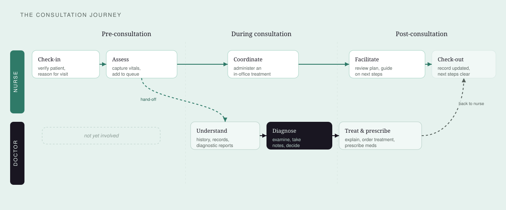
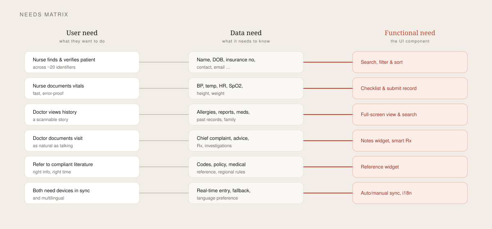
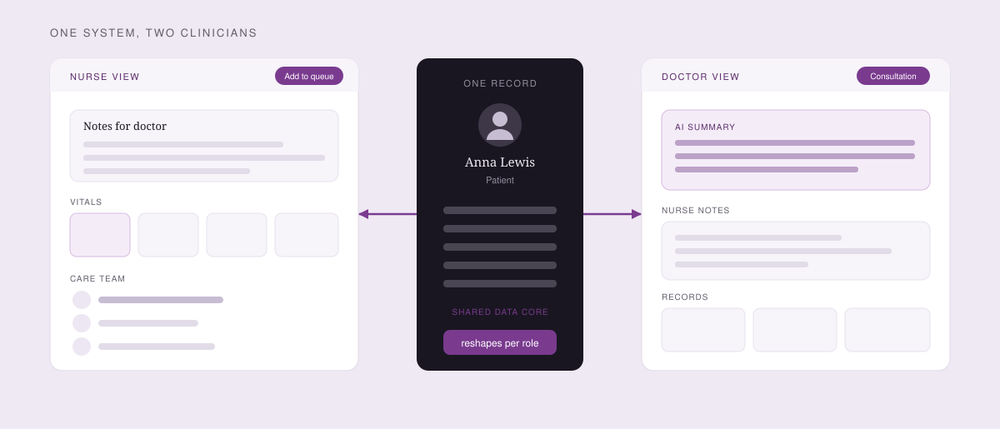
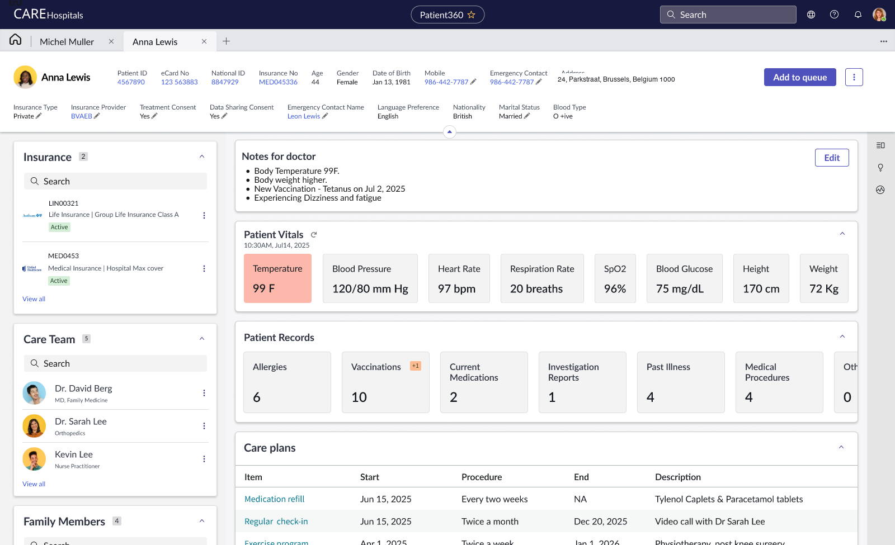
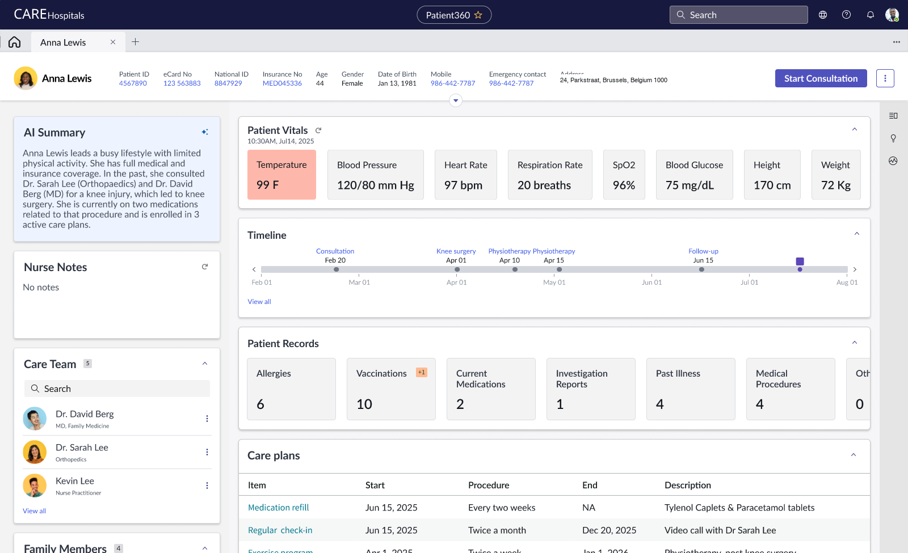
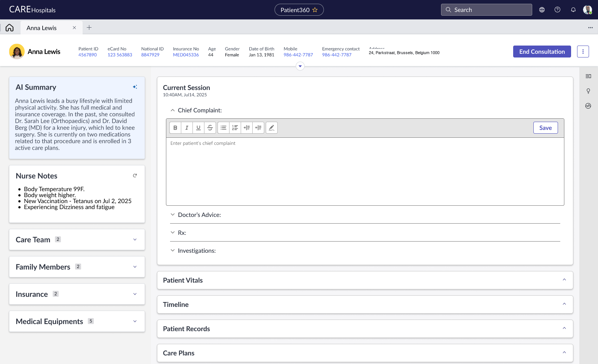
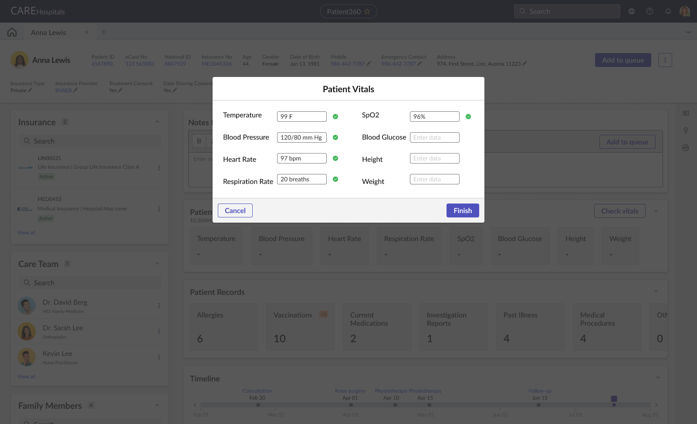
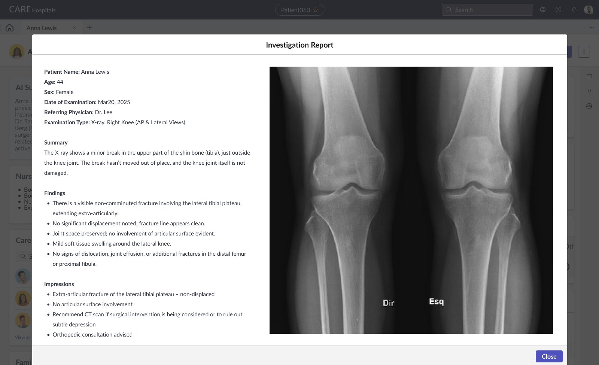
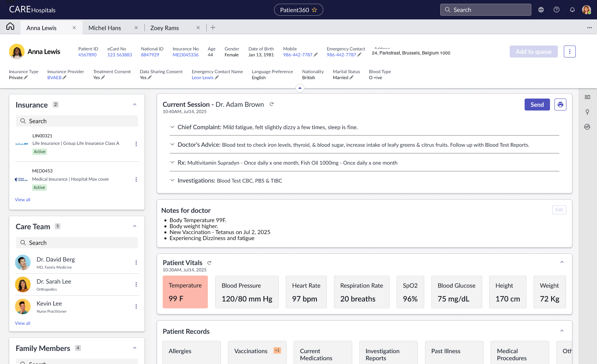

Self-initiated · Healthcare SaaS · 2023
Patient 360: one system, two clinicians.
I’ve sat in that hospital process more than once. The nurse-to-doctor hand-off always felt like two systems. This is one angle on that, not a commissioned product. The core idea: one shared patient record that reshapes itself for whoever logs in.

The problem
Nurses and doctors work from the same patient record but need different information at different moments. Fragmented tools slow the handoff and add cognitive load.
My role
Solo product designer. I scoped the consultation journey, mapped role-based needs, and designed the role-adaptive concept from discovery through high-fidelity UI.
The three lenses
Discovery, a vision, and a designed solution.
Discovery
Structured discovery: a tight scope, JTBD personas, a consultation journey, and a needs → data → function matrix.
Vision
One role-adaptive system. The same record reshapes for whoever logs in, instead of shipping two separate tools.
Craft
A high-fidelity flow from start to finish: vitals, the nurse→doctor hand-off, an AI summary, and a focused consultation.
The context
Help practitioners make better decisions, faster.
I imagined a fast-growing medical-software company that wants one platform for practitioners: bookings, registration, records, clinical notes, claims, and billing. The problem I chose: help clinicians make better decisions by accessing and capturing vital clinical information on a returning patient. History, examination notes, procedures, prescriptions, and lab reports.
Find fast
Locate a specific patient across about 20 identifiers: name, patient number, DOB, contact, and more.
See the whole picture
An overview of the patient's medical history and all clinical information in one place.
Capture in context
Take notes during a consultation without losing the thread of the conversation.
Desktop first
A connected desktop surface as the primary workspace for the core clinical use cases.
The constraint
A compliance-heavy, privacy-first domain. Treated as such.
Healthcare is high-stakes. Data protection, consent, and clinical compliance are design constraints. As a self-directed concept I couldn't run primary research, so I used secondary research and conversations with people in healthcare, written down as explicit assumptions rather than hidden guesses.
Privacy by design
Informed consent, data minimisation, the right to access, and breach-aware handling shape what's shown and to whom.
Navigating chaos
Clinicians multitask and context-switch constantly; the interface has to stay calm and show the right thing at the right moment.
Pen to pixel
Users range from tech-savvy to traditional. Many still prefer pen and paper, so the flow has to feel natural to both.
Lens 01 · Discovery
Two roles, one journey, every need traced.
I framed the two clinicians by their jobs to be done rather than rigid personas, since their roles overlap around the same patient. That produced a shared consultation journey and a needs matrix that keeps every UI decision traceable to a real need.
Doctor · JTBD
Understand → Diagnose → Treat
Understand the issue and history, capture findings, synthesise a diagnosis, and put a treatment plan into action.
Pain information overload · fragmented history · the burden of documentation.
Nurse · JTBD
Prepare → Vitals → Coordinate → Facilitate
Verify the patient, capture vitals, execute the doctor's orders, and help the patient understand next steps.
Pain task juggling · constant interruptions · communication delays.


The framing
How might we help clinicians decide with the right information?
A scannable story
Turn a fragmented medical history into a clear story a doctor can grasp at a glance.
Documenting = talking
Make capturing a consultation feel as natural as the conversation itself, in context.
Fast, error-proof
Help a nurse capture vitals and update core info in the fastest, most error-proof way.
Lens 02 · Vision
One record that reshapes for whoever logs in.
Rather than build two products, the vision is a single system with a shared patient core and role-adaptive layouts. The nurse view leads with what a nurse does: notes for the doctor and a fast vitals capture. The doctor view reshapes the same record to lead with an AI summary, the nurse's notes, and a consultation flow.



Lens 03 · Craft
The consultation, end to end.
The concept goes all the way to a working, high-fidelity flow. It answers the three learnings directly: reduce cognitive load, adapt to the role, and cut data entry.



The loop closes
Back to the nurse, ready to act.

The trade-off
One adaptive system vs. two tailored tools.
Two roles, two very different workflows. The easy path is two separate tools. Each one fits its user, but data gets copied, sources of truth drift, and the hand-off between nurse and doctor breaks.
One shared core that flexes: persona layouts, re-ordered components, and focus modes. It costs more design thought up front, but keeps data consistent and makes the nurse→doctor→nurse hand-off feel like one system.
One shared core that flexes — not two tools that drift apart.
Outcome
What the exploration showed.
Reduce cognitive load
Clinicians multitask, so the interface stays clear and shows the right info in context, role by role.
Role-based, one core
Roles differ but the core data is the same; persona layouts + re-ordering tailor the experience without forking the product.
Reduce data entry
Connected data, smart autocomplete and structured records cut the repetitive typing that clinicians resent.
If this were real
I’d start with the people in the room.
This stays a concept, not a shippable product. Next would be primary research with nurses and doctors, a compliance pass, and claims and billing parked until the consultation loop is proven. The value of the work is the hand-off: one shared record, two roles, and a point of view I can take into a real research room.
More work